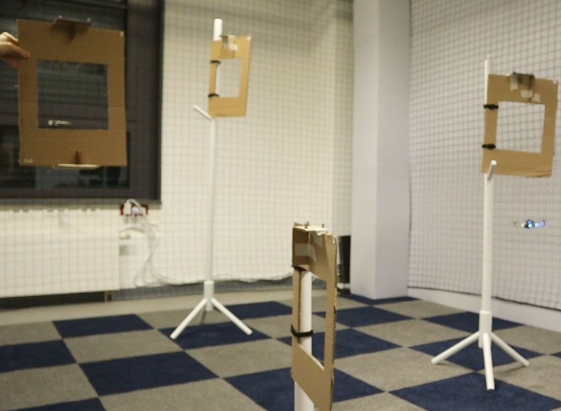
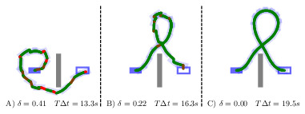
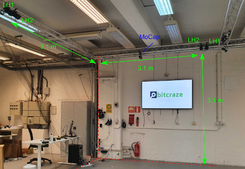

Publications
This list only includes publications since the lab was founded. For other relevant publications see Wolfgang Hönig's personal webpage.

Sequence-of-Constraints MPC: Reactive Timing-Optimal Control of Sequential Manipulation
IEEE/RSJ international conference on intelligent robots and systems (IROS) , 2022

db-A*: Discontinuity-bounded Search for Kinodynamic Mobile Robot Motion Planning
IEEE/RSJ international conference on intelligent robots and systems (IROS) , 2022

Lighthouse Positioning System: Dataset, Accuracy, and Precision for UAV Research
Robot Swarms in the Real World Workshop at ICRA , 2021